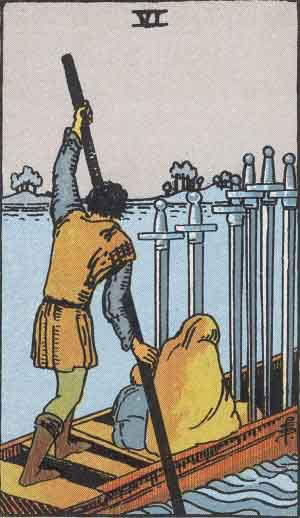

Main | Arcana | Cups | Pentacles | Swords | Wands
Six of Swords

Upright
Transition, Migration, Letting Go
- Sometimes the only way to solve a problem is to leave it behind.
- When the past has made its point, accept it and leave it there.
- The understanding brought by lessons learned should bring greater clarity.
- When feeling adrift in a new environment, make your higher self the anchor of your way.
- Trust the flow of life as it takes you forward. Leave past dreams behind.
- Life is not about where you stand, but the direction you are going.
Reversed
Resistance, Stagnation, Cannot Move On
Here's a gentle reminder that change is good. Be brave. Trust your process. In what ways do you sabotage yourself? Close the doors behind you. Choose love and be hated. You can move on from your past. There are unresolved issues in your past. Be encouraged to move on. Leave it behind. Look at the benefits of your transition while closing the drawbacks. Communication can be painful. Honor people's choices.